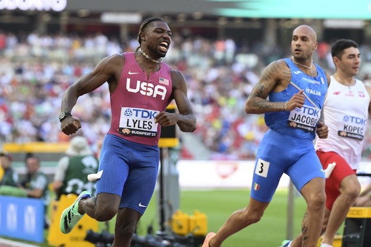
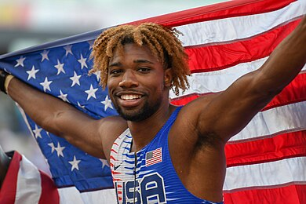

Noah Lyles (Gainesville, 18 luglio 1997) è un velocista statunitense, campione mondiale dei 100 metri piani e dei 200 metri piani a Budapest 2023 e dei 200 metri piani a Doha 2019 e Oregon 2022, distanza sulla quale è detentore del record nazionale. |
 |